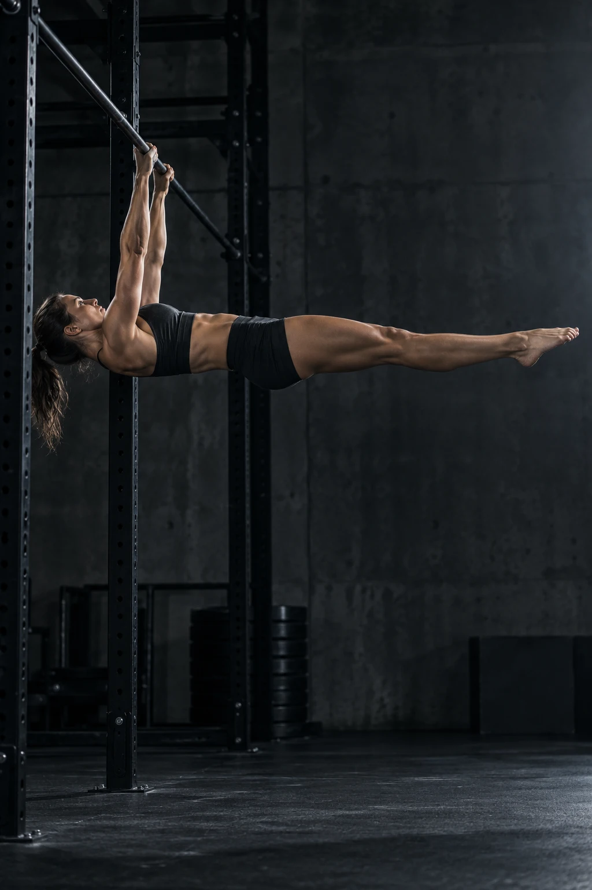
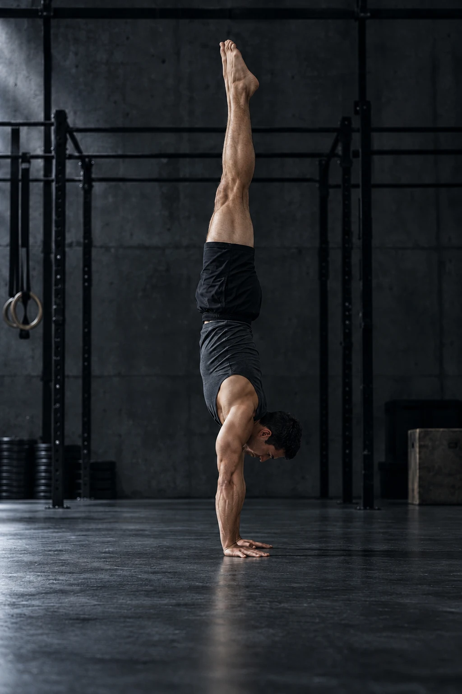
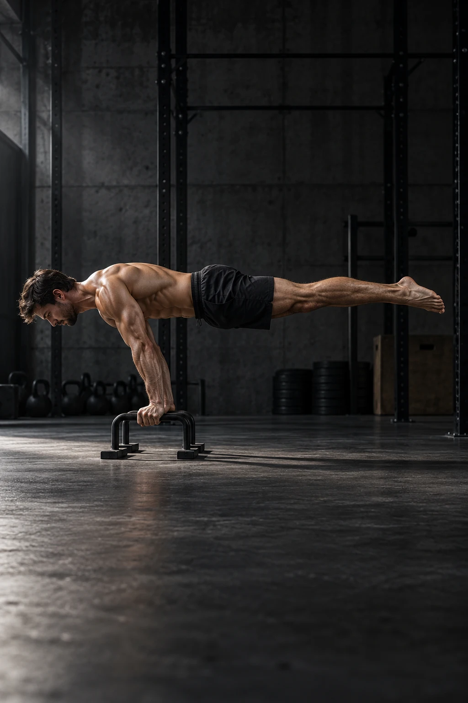

הכיוון שלך
לאן תרצה
לאן תרצה
לקחת את התנועה?
בחר מטרה שתלווה את התרגול שלך.

לראות את הטכניקה שלך.
להבין מה לשפר. להתקדם בביטחון.
בחר מטרה שתלווה את התרגול שלך.
אפשר לבחור כמה תרגילים כתחומי עניין. כרגע ניתן לנתח עמידת ידיים ו־Front Lever בבדיקה ניסיונית ללא ציון; שאר התרגילים מסומנים ״בקרוב״.

הדגמה על תמונת AI · לא תוצאת משתמשהווידאו ונקודות הגוף נשארים במכשיר. אין הרשמה ואין העלאה לענן.

PLANCHE · הניתוח בקרוב
הטכניקה שלך, מזווית חדשה.
וידאו אחד. תובנות שאפשר ליישם.
בחר עמידת ידיים לניתוח עכשיו. Front Lever זמין לבדיקה ניסיונית בלבד. שאר התרגילים מוצגים לקראת ההמשך, ועדיין אינם זמינים לניתוח.
אחרי רענון צריך לבחור את הסרטון שוב. המדידות השמורות עדיין זמינות בהיסטוריה.
צלמו מהצד, כשכל הגוף בפריים.
הווידאו נשאר במכשיר.
הניתוח מתבצע במכשיר. משך העיבוד תלוי באורך הסרטון ובמכשיר שלך.
תרגלו לצד קיר ובמרחב פנוי. אם מופיע כאב, הפסיקו את התרגיל.
צילום ניסיון נוסף ←מדידות שנשמרו במכשיר הזה. סרטונים אינם נשמרים עם ההיסטוריה.